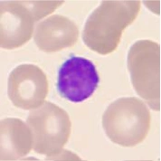
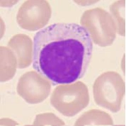
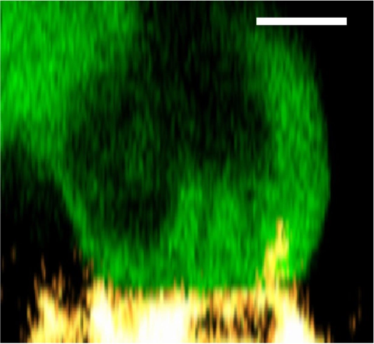

MARROW & LYMPHOID SITES
Lymphoid precursor
NK cells arise from blood-forming precursors through a lymphoid developmental route.
Fast surveillance. A different rulebook.
NK cells are lymphocytes of the innate immune system. They can attack certain infected or transformed cells without the same antigen-specific priming required by naive T cells.
Choose a stage to see what changes.
NK cells arise from blood-forming precursors through a lymphoid developmental route.

The cell acquires receptors and builds its functional equipment. NK-cell development occurs across more than one tissue.

Education and maturation help establish a balance between activating and inhibitory signals.

The balance of signals determines whether the NK cell releases cytotoxic granules and immune signals. Activation is a functional response, not a new smear-defined maturation stage.
Simplified teaching pathway. The two smear photos are different representative lymphocytes, not a photographic sequence of NK maturation. NK identity and developmental stage require additional testing. The activated example uses fluorescence microscopy, with colors marking cellular components; it is not a routine blood smear.
Receptors sense a balance of normal-self and stress-related signals.
When activation outweighs inhibition, granule contents can trigger death in a target cell.
NK-cell cytokines help coordinate other parts of the immune response.